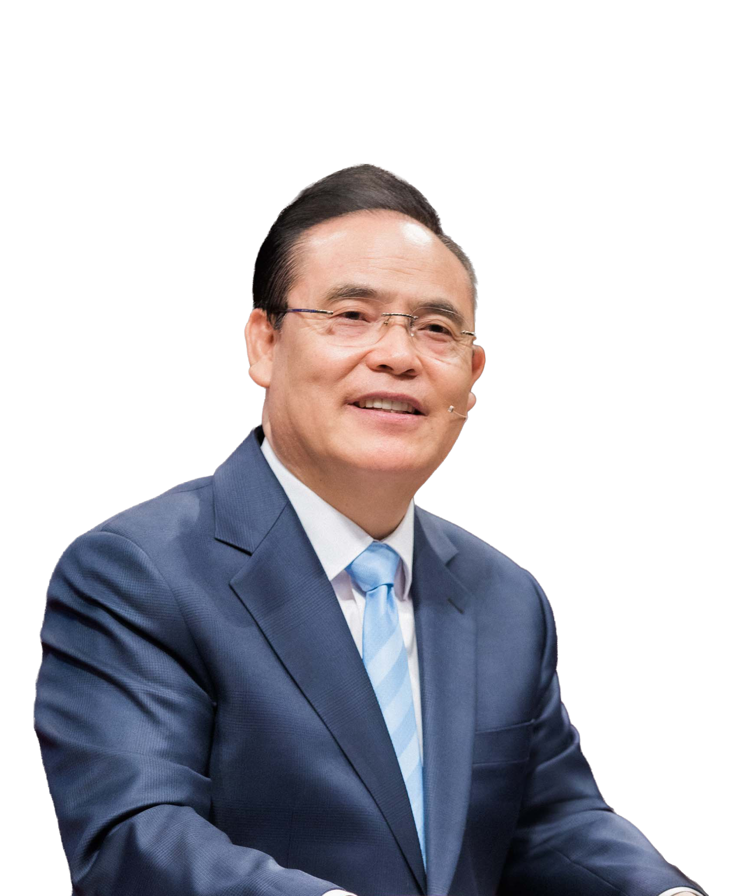
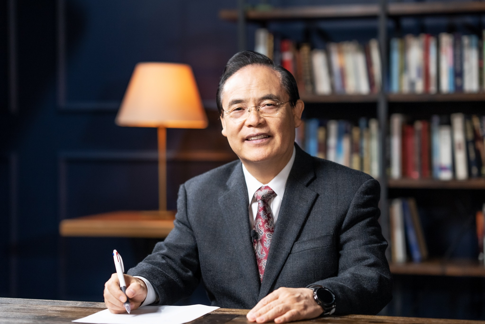

THANKSGIVING DAWN REVIVAL 2026
은혜한인교회 | 2026
추수감사
특별새벽부흥회
감사할 때 임하는
하나님의 축복
감사의 고백이 기적의 시작이 되는 여섯 번의 새벽.
하나님의 말씀과 은혜가 있는 자리로 초대합니다.

MAIN SPEAKER한기홍 목사은혜한인교회 담임
JOIN US IN PRAYER은혜의 새벽이 다가옵니다
--DAYS
:--HOURS
:--MINUTES
:--SECONDS
THE INVITATION / 집회 소개
감사가 회복이 되고,
은혜가 삶이 되는 시간.
감사는 우리의 믿음을 자라게 하고, 슬픔을 기쁨으로 바꾸며, 삶 가운데 새로운 은혜의 문을 엽니다. 여섯 번의 새벽, 말씀과 기도로 하나님께 나아가는 은혜의 자리에 여러분을 초대합니다.
여섯 번의 말씀 살펴보기2026 · THANKSGIVING · REVIVAL
01 / DATE
11.16 — 11.21
2026년 11월 16일(월) – 21일(토)
02 / TIME
05:15 AM
월–금 오전 5시 15분 · 토 오전 6시
03 / LOCATION
비전센터 본당
은혜한인교회 · Fullerton, California
SIX MORNINGS OF GRACE
말씀 일정
11월 16일부터 21일까지, 매일 새로운 말씀으로 나아갑니다.
✳ 시간은 현지 시간(PST, 캘리포니아) 기준입니다. 자세한 안내는 교회에 문의해 주세요.
LIVE & REPLAY온라인으로도 함께 예배하세요
온라인 예배 · 다시보기
집회 실황 영상과 다시보기 안내를 확인하실 수 있습니다.
LIVE & REPLAY
집회 실황 영상
현장에서 함께하시거나, 온라인으로 말씀을 다시 만나보세요.

2026 THANKSGIVING DAWN REVIVAL SPEAKER / 강사 소개
말씀을 전하는
한기홍 목사
남가주 은혜한인교회 담임목사
주요 약력
- GMI 총재 (63개국 337명 선교사, 28개 신학교)
- 대한예수교장로회 국제총회 총회장
- 세계선교동역 네트워크(KIMNET) 국제대표
- 미주 성시화 운동본부 공동대표
- 2015년 5월 7일, ‘미국 국가 기도의 날’ 대표기도
“한국인 목사 중 처음으로 기도자로 초청되어 동성 결혼은 하나님의 법을 대적하는 일임을 선포함”
저서 PUBLICATIONS
- 『오늘을 만족하라』 (두란노)
- 『하나님 마음에 꼭 드는 사람』 (두란노)
VISIT US / 오시는 길
은혜의 자리에서
뵙겠습니다.
LOCATION은혜한인교회 비전센터 본당
150 S. Brookhurst Rd.
Fullerton, CA 92833
WORSHIP TIME월–금 오전 5:15 / 토 오전 6:00
2026년 11월 16일 – 21일
CONTACT714-446-6200
GRACE MINISTRIES INTERNATIONALFULLERTON · CALIFORNIA